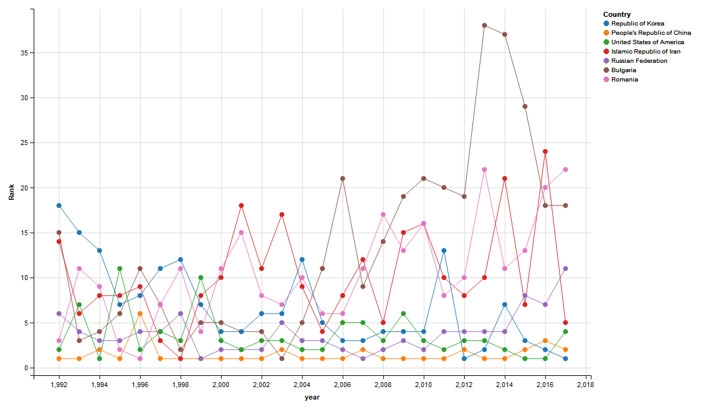

R is a programming language originally developed for statistical analysis
It has a lot in common with Matlab (e.g., indexing starts from 1, not 0)
If you just start to learn R, do not read wikipedia article, which is horrible
Proper IDE is strongly recommended, RStudio
Example 1 Since secondary school, I love olympiads in maths/physics/chemistry. The only subject with proper database of results in International olympiads is mathematics. Here I gather some info from 1992 and do basic analysis.
library(htmltab)
library(dplyr)
library(ggvis)
TBL = data.frame()
# grab the results of all teams from 1992 to 2017 years
for (j in 2017:1992){
baseurl = 'https://www.imo-official.org/year_country_r.aspx?year='
url = paste0(baseurl,j,'&column=total&order=desc&language=en')
tbl <- htmltab(url,which = 1, rm_nodata_cols=F)
tbl$year = j
TBL <- rbind(TBL, tbl)
}
for (k in 2:16){
TBL[,k] <- as.numeric(TBL[,k])
}
#average rank of the teams in the last 10 years
TBL %>% filter(year > 2007) %>%
group_by(Country) %>%
summarise(RANK = mean(Rank), POINTS = mean(Total)) %>% arrange(RANK)
# show the meddal set of the winning team
TBL %>%
filter(Rank == 1) %>%
arrange(`Awards >> G`) %>%
select(Country, year, `Awards >> G`, `Awards >> S`, `Awards >> B`)
# select countries with at least one appearance of Rank == 1
TBL %>%
group_by(Country) %>%
summarise(m = min(Rank,na.rm = T)) %>%
filter(m <= 1) %>%
select(Country) ->
countries
#show results of the teams with at least one team victory
ggvis(TBL) %>% group_by(Country) %>%
filter(Country %in% countries$Country) %>%
layer_paths(~year, ~Rank, stroke=~Country) %>%
layer_points(~year, ~Rank, fill=~Country)
